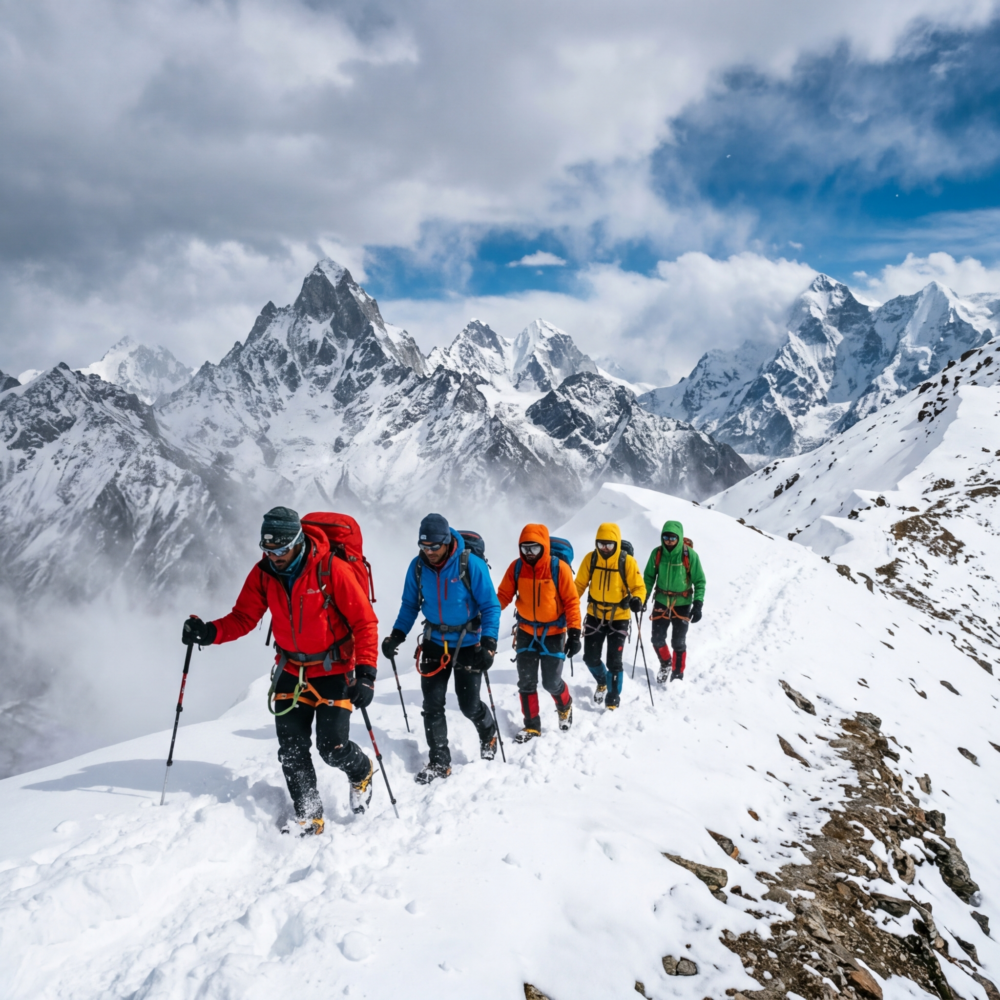
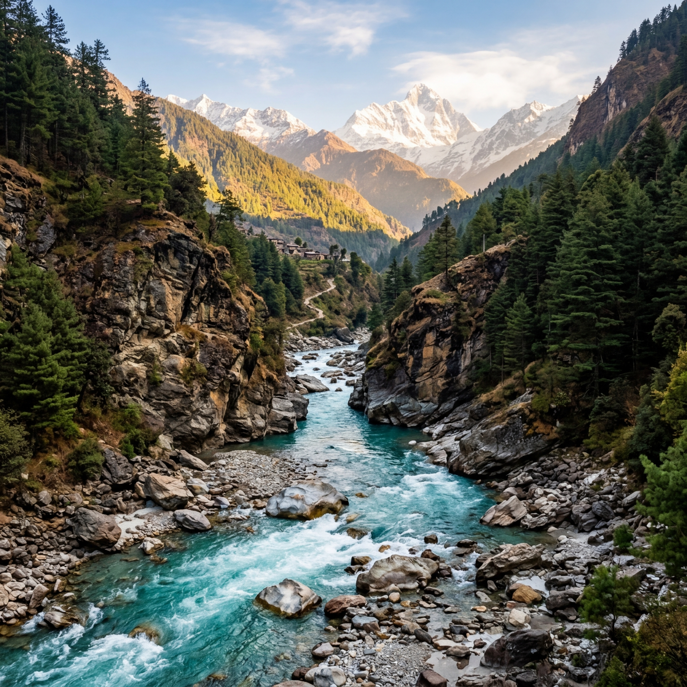
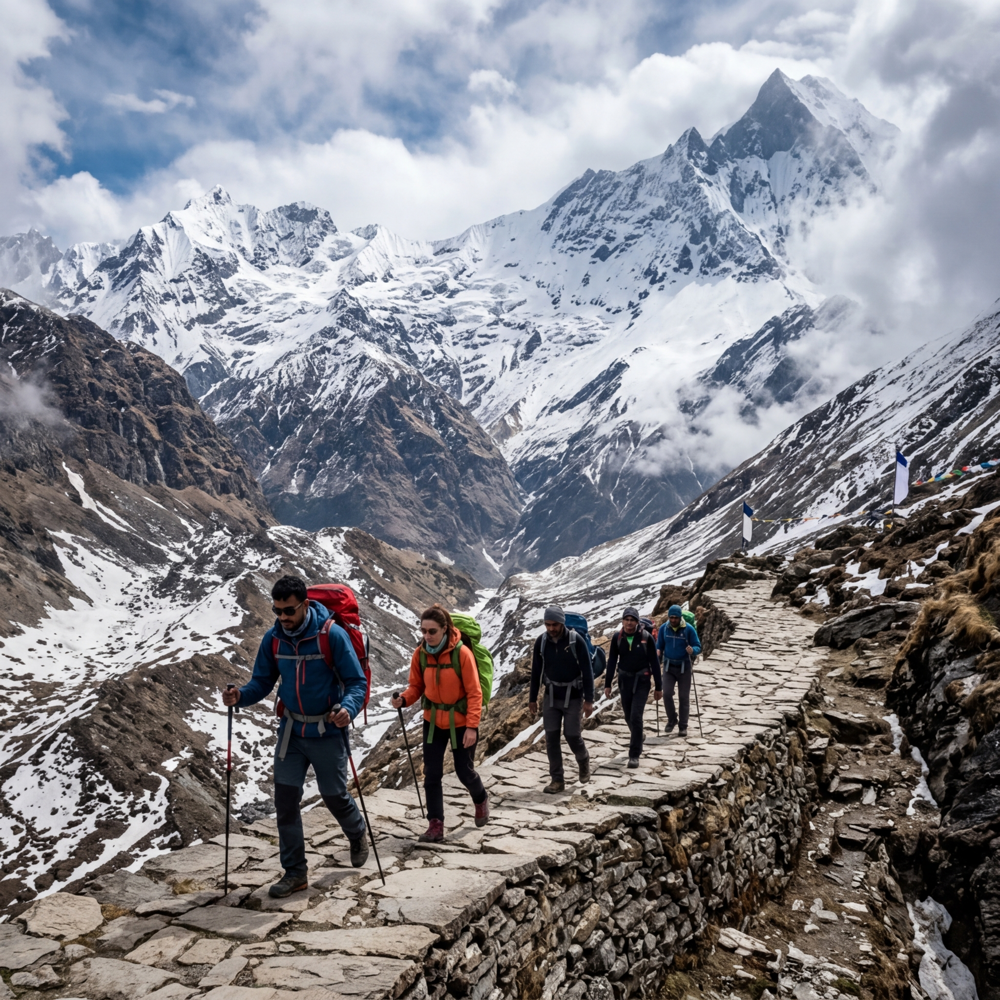

Hampta Pass Trek
Description
Hampta Pass is famous for being one of the most dramatic crossover treks in the Himalayas. In just a few days, trekkers transition from the lush, green, and vibrant Kullu Valley with its waterfalls and forests into the stark, dry, and starkly beautiful cold desert of Spiti.
Crossing the 14,100 ft pass is as thrilling as it is scenic, offering views of the massive Indrasan peak. The journey culminates with a visit to the ethereal Chandratal Lake (The Moon Lake), a high-altitude gem nestled amidst the rugged Spiti peaks. This trek is perfect for adventurers who love diverse landscapes and stark contrasts.
Itinerary
Manali to Jobra to Chika
Drive and trek through forests.
Chika to Balu ka Ghera
Trek along the river bed.
Balu ka Ghera to Siagoru via Hampta Pass
The pass crossing day.
Siagoru to Chatru to Chandratal
Descent and drive to the moon lake.
Chatru to Manali
Drive back via Rohtang Pass.
Includes & Excludes
- Camping
- Meals
- Guide
- Transport
- Personal expenses
Photo Gallery


